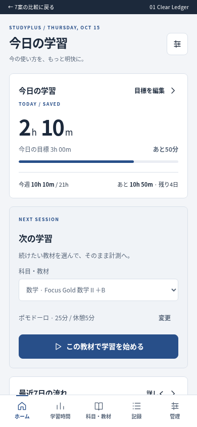
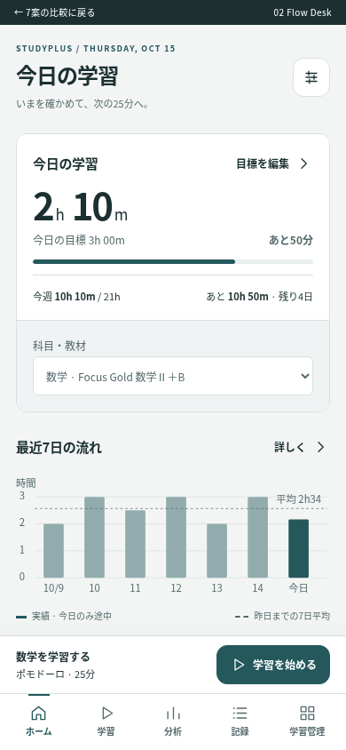
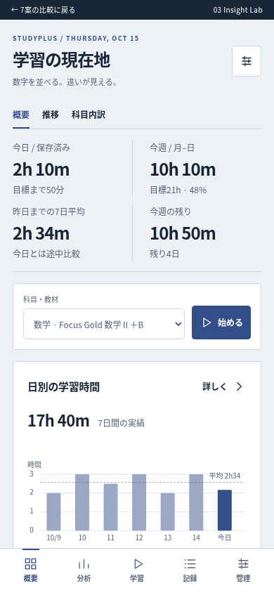
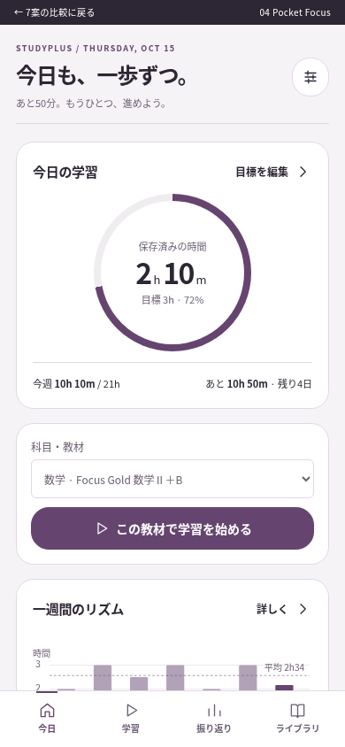
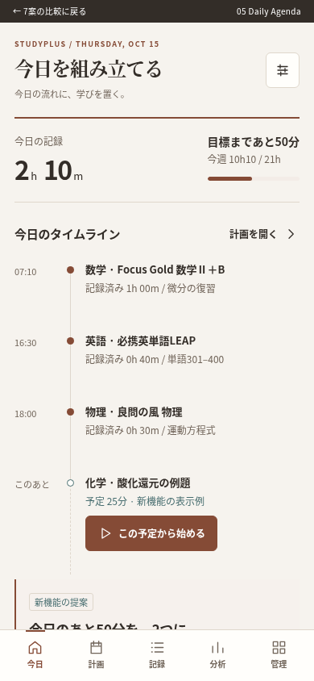
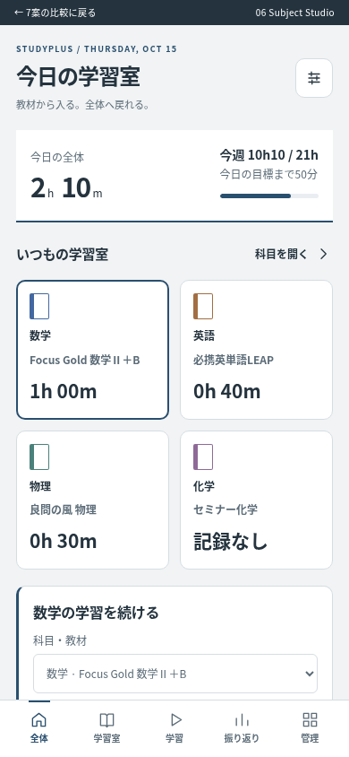
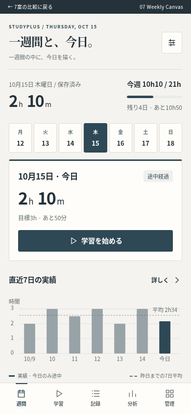

まずは案2「Flow Desk」から。今日と週の情報、選択中教材、学習開始を一体化し、グラフまでを短くします。さらに分析重視なら案3、教材中心なら案6も比較してください。
使い方：上の切替で7枚を同条件で比較 → 気になる案を「操作する」で開く → 開始・方法切替・期間切替・管理メニューを試す。各案の実装難易度と注意点は「設計の説明」にあります。画像と数値は提案用で、実保存・同期は行いません。
7つの設計方向
01 · 保守的改善Clear Ledger
整った学習台帳
4つの情報群を保ち、カード内の区切りを減らして数値と行の整列で読ませる。

設計の説明・メリット・注意点
- 中心思想
- 4つの情報群を保ち、カード内の区切りを減らして数値と行の整列で読ませる。
- 解決する問題
- カードごとの重複見出し、細かな罫線、説明文の分散。
- ホーム構造
- 今日の進捗と学習開始を上段、7日推移と科目行を下段。週間進捗は今日の直下の1行に統合。
- スマートフォン
- 今日→教材と開始→小さな推移→科目一覧。補助指標は詳細を展開。
- PC
- 200pxのサイドバーと2カラム。4つのまとまりは枠の強弱で主従を付ける。
- ナビゲーション
- ホーム・学習時間・科目/教材・記録・管理の5系統。既存7ページの機能は維持し、目標・模試・AI・設定は管理内に行き先を明示する。
- 情報の階層
- 常時：今日・週・開始・7日。展開：科目内教材。別画面：スコア式、長期比較、記録の全件。
- グラフ・表現
- 棒と基準線、単位付きの軸。今日には途中ラベル。科目内訳は数値付き横棒。
- メリット
- 既存利用者が迷いにくい。主要部品の整理で効果を得やすい。
- デメリット
- 構造上の新鮮さは弱い。長い分析画面の改善には別途再編が必要。
- 実装難易度
- 低
- 将来的な拡張性
- 既存の画面・データモデルを活用して教材や指標を追加しやすい。
- デザイントークン
- 背景：#F3F5F8
Surface：#FFFFFF
Primary：#284F89
Accent：#B37936
Text：#1C293B
Subtext：#59677A
Border：#D9E0E9
角丸：8px
影：なし。入力中のダイアログのみ弱い影。
余白：4/8/12/16/24/32px
文字：本文14px、補足12px、見出し20/28px、主数値48px。数値は等幅。
Success #34735D / Warning #966009 / Error #AF3846
Chart：数学 #4368A0、英語 #A36E42、物理 #4B817B、化学 #8E6A98。ユーザー色を優先。
仕様をMarkdownで読むFlow Desk
状況から、そのまま学習へ
今日の数値・週間の文脈・開始操作をひとつの行動面として統合。下段は比較に専念。

設計の説明・メリット・注意点
- 中心思想
- 今日の数値・週間の文脈・開始操作をひとつの行動面として統合。下段は比較に専念。
- 解決する問題
- 今日と開始が離れる、教材選択が重複する、週の情報が下に埋もれる。
- ホーム構造
- 上段は今日と週間のコンパクトな帯＋選択中教材と開始。下段は横長推移と科目一覧。カードを増やさず2層にする。
- スマートフォン
- 今日と週をひとつの面に凝縮し、直下に教材選択。下部に選択済み教材を引き継ぐ開始ドックを固定。推移を上へ寄せ、科目一覧はその下で読む。
- PC
- 上段で今日の数値と開始欄を横並びにし、下段に推移と科目一覧を配置。状況確認と開始を同じ視野に入れる。
- ナビゲーション
- ホーム・学習・分析・記録・学習管理。目標/教材/科目/模試/AI/設定を管理ドロワーで明記。
- 情報の階層
- 常時：今日/週/教材/開始/グラフ。展開：週の算出根拠。別画面：科目詳細、全記録、評価内訳。
- グラフ・表現
- 7本の棒＋昨日まで平均の点線。今日だけ塗り分けとラベル。分析詳細は期間比較と内訳を隣接。
- メリット
- 行動と把握のバランスが最もよい。スマホで推移まで到達しやすい。
- デメリット
- 開始ドックと入力画面の状態を一貫して扱う設計が必要。
- 実装難易度
- 中
- 将来的な拡張性
- 計測・共有状態・今日の候補を同じアクション領域へ拡張できる。
- デザイントークン
- 背景：#F3F5F4
Surface：#FFFFFF
Primary：#24585D
Accent：#B06A36
Text：#1C3032
Subtext：#556A6C
Border：#D6E0DF
角丸：12px
影：開始ドックとシートのみ0 8px 24px #183A3A12。
余白：4/8/12/16/24/40px
文字：本文14px、補足12px、見出し22/30px、主数値52px。
Success #34735D / Warning #966009 / Error #AF3846
Chart：数学 #4368A0、英語 #A36E42、物理 #4B817B、化学 #8E6A98。ユーザー色を優先。
仕様をMarkdownで読むInsight Lab
学習を読み解く分析卓
ホームを比較可能なデータ面にする。フィルタ・指標・チャート・表を同じ列に揃える。

設計の説明・メリット・注意点
- 中心思想
- ホームを比較可能なデータ面にする。フィルタ・指標・チャート・表を同じ列に揃える。
- 解決する問題
- PCの余白の偏り、指標の説明不足、比較に必要な画面往復。
- ホーム構造
- 横一列のKPI、広い日別チャート、右の開始コンソール、下の科目マトリクス。
- スマートフォン
- 同じ表を縮めず、今日・推移・内訳の表示切替。今日と開始は切替の外。内訳は数値行、表は領域内スクロール。
- PC
- 狭いアイコンレール＋上部コマンドバー。グラフを広く取り、右に固定した操作欄。
- ナビゲーション
- 概要・時間・配分・継続・記録の分析タブ。教材/目標/模試/AI/設定は学習管理へ。
- 情報の階層
- 常時：今日/週間KPI、開始。切替：推移/内訳。詳細：式、信頼度、原記録。
- グラフ・表現
- 日別棒・平均線と科目マトリクス。比較期間は同一軸、凡例と単位を固定。小さな倍数図を拡張候補とする。
- メリット
- PCの一覧性と比較性能が高い。分析する目的が明確。
- デメリット
- 学習開始だけの利用には情報が多い。スマホは切替回数が増える。
- 実装難易度
- 高
- 将来的な拡張性
- 模試との関連・期間比較・詳細フィルタに強い。
- デザイントークン
- 背景：#EDF0F4
Surface：#FFFFFF
Primary：#344E8A
Accent：#8C6247
Text：#182537
Subtext：#55647A
Border：#CDD6E2
角丸：4px
影：なし。罫線と背景の階調で階層化。
余白：4/8/12/16/24px
文字：本文13px、補足12px、見出し18/26px、KPI32px。表はtabular-nums。
Success #34735D / Warning #966009 / Error #AF3846
Chart：数学 #4368A0、英語 #A36E42、物理 #4B817B、化学 #8E6A98。ユーザー色を優先。
仕様をMarkdownで読むPocket Focus
手元の学習コンソール
今日の進捗をひと目で読める中心に置き、学習開始と記録を親指の範囲へ集約。

設計の説明・メリット・注意点
- 中心思想
- 今日の進捗をひと目で読める中心に置き、学習開始と記録を親指の範囲へ集約。
- 解決する問題
- スマホの開始までの距離、目標と実績の分散、入力画面への緊張感。
- ホーム構造
- 進捗リングと今日の数字、教材の選択、開始ボタン、短い推移と週の到達度。
- スマートフォン
- 下部4項目ナビ。学習操作はBottom Sheet。中央の数字は保存済み、計測中は別ラベル。
- PC
- リングを左、教材と開始を中央、週間と推移を右の3領域に展開。スマホ画面を引き伸ばさない。
- ナビゲーション
- 今日・学習・振り返り・ライブラリ。教材/科目/目標/模試/AI/設定はライブラリ内。
- 情報の階層
- 常時：今日/週/開始/短い推移。展開：科目別実績。別画面：記録・詳細分析。
- グラフ・表現
- 単純な目標リング＋棒。リングは実績達成率のみ。ポモドーロの区間リングは学習画面に限定して混同を避ける。
- メリット
- 学習開始が最も分かりやすい。スマホに馴染みやすい。
- デメリット
- リングはPCの情報密度を下げやすい。分析主体の利用者には間接的。
- 実装難易度
- 中
- 将来的な拡張性
- 休憩・計測共有・小窓の状態をセッションにまとめやすい。
- デザイントークン
- 背景：#F6F3F7
Surface：#FFFFFF
Primary：#65456F
Accent：#9A6235
Text：#2D2634
Subtext：#6C6074
Border：#E0D8E5
角丸：20px
影：シートに0 12px 40px #30203818。カードには原則なし。
余白：4/8/12/20/28/40px
文字：本文15px、補足12px、見出し22/28px、主数値48px。
Success #34735D / Warning #966009 / Error #AF3846
Chart：数学 #4368A0、英語 #A36E42、物理 #4B817B、化学 #8E6A98。ユーザー色を優先。
仕様をMarkdownで読むDaily Agenda
今日の学習を組み立てる
記録と次に行うことを時間軸で結び、数値を今日の計画の文脈で読む。

設計の説明・メリット・注意点
- 中心思想
- 記録と次に行うことを時間軸で結び、数値を今日の計画の文脈で読む。
- 解決する問題
- 次の一手が科目候補だけで、教材や具体的な内容に結び付きにくい。
- ホーム構造
- 今日/週の数値帯、実績タイムライン、これからの学習計画、横に短い7日推移。
- スマートフォン
- 一本のタイムライン。完了記録と予定を線種・ラベルで区別し、予定から直接セッションへ。
- PC
- 実績と予定の2レーン＋週の傾向。予定の所要時間と実績は別集計。
- ナビゲーション
- 今日・計画・記録・分析・管理。計画は新機能で、既存の科目/教材/目標とリンク。
- 情報の階層
- 常時：今日/週/次の予定。折畳：完了済み記録。別画面：長期分析、教材詳細。
- グラフ・表現
- 時間軸と小さな週棒。予定の時間を実績グラフに加算しない。
- メリット
- 次に何をするかが具体的。日々の学習習慣と相性がよい。
- デメリット
- 予定管理をしない利用者には入力負担。新しいタスク・予定データと同期設計が必要。
- 実装難易度
- 高
- 将来的な拡張性
- 復習予定、期限、模試前の計画へ発展できる。採用時は別途データ設計。
- デザイントークン
- 背景：#F6F3EE
Surface：#FFFEFB
Primary：#854B36
Accent：#486E70
Text：#332D28
Subtext：#706459
Border：#DFD7CC
角丸：6px
影：なし。紙面に近い罫線とタイポグラフィ。
余白：4/8/16/24/32px
文字：本文14px、補足12px、見出し24/32px、時刻14px・数値42px。
Success #34735D / Warning #966009 / Error #AF3846
Chart：数学 #4368A0、英語 #A36E42、物理 #4B817B、化学 #8E6A98。ユーザー色を優先。
仕様をMarkdownで読むSubject Studio
科目を起点にする学習室
普段選ぶ科目・教材を入口にし、その対象の実績・目標・記録を同じ場所に置く。

設計の説明・メリット・注意点
- 中心思想
- 普段選ぶ科目・教材を入口にし、その対象の実績・目標・記録を同じ場所に置く。
- 解決する問題
- 教材選択の繰り返し、対象別画面と記録操作の分離。
- ホーム構造
- 全体の今日/週の帯、科目ごとのコンパクトな行/タイル、選択科目の教材と開始、全体7日推移。
- スマートフォン
- 科目の横タブと教材一覧。対象を選ぶと下部に開始操作。全体の数値帯は残る。
- PC
- 科目の左ペイン、教材の中央ペイン、選択教材の実績・開始を右に配置。
- ナビゲーション
- 全体・学習室・記録・振り返り・管理。科目と教材を同じ場所で辿る。
- 情報の階層
- 常時：全体今日/週、選択対象と開始。展開：教材内訳。別画面：全体詳細、模試、AI、設定。
- グラフ・表現
- 科目比較の横棒と教材の8週推移。全体と対象の期間・ラベルを分離。
- メリット
- 教材が多い人に強い。選択を保持して記録を始められる。
- デメリット
- 対象を選ばない全体分析には一手増える。多ペインのスマホ変換に設計が要る。
- 実装難易度
- 中〜高
- 将来的な拡張性
- 教材アーカイブ、検索、模試と科目の関係表示に強い。
- デザイントークン
- 背景：#F1F3F4
Surface：#FFFFFF
Primary：#294F6F
Accent：#9C713B
Text：#24333E
Subtext：#5C6C78
Border：#D5DDE2
角丸：10px
影：選択教材のみ弱い縁取り。影なし。
余白：4/8/12/16/24/32px
文字：本文14px、教材名15px、見出し22/28px、主数値40px。
Success #34735D / Warning #966009 / Error #AF3846
Chart：数学 #4368A0、英語 #A36E42、物理 #4B817B、化学 #8E6A98。ユーザー色を優先。
仕様をMarkdownで読むWeekly Canvas
一週間の学習地図
週を空間として見せ、今日を大きく選択。今日の行動と週間目標を常に同じ画面に置く。

設計の説明・メリット・注意点
- 中心思想
- 週を空間として見せ、今日を大きく選択。今日の行動と週間目標を常に同じ画面に置く。
- 解決する問題
- 日と週を別画面で見比べる負担、記録が時系列の文脈を失う。
- ホーム構造
- 週の日付ストリップ、拡大した今日の実績と開始、7日推移、今日の記録。
- スマートフォン
- 横にスクロールしなくても7日を選べる日付列＋選択日の詳細。今日は開始、過去日は記録追加に切替。
- PC
- 月〜日の7列を表示し、今日を広く取る週キャンバス。各日の時間と記録を同じ列で読む。
- ナビゲーション
- 週間・学習・記録・分析・管理。過去の週へ移動しても今日へ戻る操作を固定。
- 情報の階層
- 常時：選択日/今日の実績と週進捗。展開：日ごとの記録。別画面：科目・教材・模試・AI・計算式。
- グラフ・表現
- 曜日列の高さと小さな7日棒。予定を加える場合は点線（新機能）で実績と区別。
- メリット
- 時間の見通しと記録の振り返りが一体になる。PCの横幅を活用。
- デメリット
- 今日中心の即時性が薄れる恐れ。日付選択の文脈を間違えない設計が必要。
- 実装難易度
- 高
- 将来的な拡張性
- 週比較・模試日・学習計画の統合に強い。計画は追加データ設計が必要。
- デザイントークン
- 背景：#F5F3EF
Surface：#FFFDF9
Primary：#2E4855
Accent：#A65A40
Text：#25323A
Subtext：#606C70
Border：#DDDCD5
角丸：3px
影：なし。日付列の境界と選択帯で示す。
余白：4/8/12/24/36px
文字：本文14px、曜日12px、日付28px、主数値44px。編集的な大きな見出し。
Success #34735D / Warning #966009 / Error #AF3846
Chart：数学 #4368A0、英語 #A36E42、物理 #4B817B、化学 #8E6A98。ユーザー色を優先。
仕様をMarkdownで読む 7案の比較評価
設計者による相対評価。ユーザーテスト結果ではありません。10点満点、高いほど良い。ただし「実装難易度」だけは10が最も難しい。性能や工数を実測した点数ではありません。
| 評価軸 | 01
Clear Ledger | 02
Flow Desk | 03
Insight Lab | 04
Pocket Focus | 05
Daily Agenda | 06
Subject Studio | 07
Weekly Canvas |
|---|
| 見た目 | 8 | 9 | 8 | 9 | 9 | 8 | 9 |
|---|
| 情報の整理 | 8 | 9 | 9 | 8 | 9 | 9 | 8 |
|---|
| 情報量と見やすさ | 8 | 9 | 10 | 7 | 8 | 9 | 9 |
|---|
| スマホ操作性 | 8 | 9 | 7 | 10 | 9 | 8 | 8 |
|---|
| PC操作性 | 8 | 9 | 10 | 8 | 9 | 9 | 10 |
|---|
| 学習開始 | 8 | 10 | 7 | 10 | 9 | 9 | 8 |
|---|
| グラフ | 8 | 9 | 10 | 8 | 7 | 8 | 8 |
|---|
| 統一感 | 9 | 9 | 9 | 9 | 9 | 9 | 9 |
|---|
| 実装難易度 ※高いほど難 | 3 | 5 | 8 | 6 | 9 | 7 | 8 |
|---|
| 保守性 | 9 | 9 | 7 | 8 | 6 | 8 | 7 |
|---|
| 拡張性 | 8 | 9 | 10 | 8 | 10 | 9 | 10 |
|---|
| Studyplusとの相性 | 9 | 10 | 8 | 8 | 8 | 9 | 8 |
|---|
推薦：02 Flow Desk
「状況が分かる→そのまま始める」を、PC・スマホの両方で実現しやすい案です。カードを増やす代わりに、今日と週を同じ情報面にまとめます。開始操作を近づけながら、グラフの面積を確保でき、現行の記録・計測・集計処理を活かせます。
ハイブリッド案：Flow Desk ＋ Insight Lab ＋ Subject Studioホームとナビは案2で統一。分析の詳細画面に案3の単位付き比較グラフと数値行を採用。科目・教材画面に案6の選択状態を保つ操作を採用します。3種類のナビや配色を混在させず、案2の部品規格へ統合します。
案5の予定管理は魅力がありますが、入力負担と保存・同期の新仕様が増えます。初回のデザイン改善には含めず、必要性を確認して追加するのが適切です。案7の週キャンバスは、週間分析の別表示として取り入れる余地があります。
採用後の実装方針
フレームワーク変更は現段階では不要です。現行のReact/TypeScriptと分析・保存関数を活かし、AppShell、ActionSurface、Metric、ChartFrame、EntityList、RecordSheetへ必要な範囲で分割。色・間隔・文字・状態を意味トークンに揃えます。既存データの移行を必要とするタスク機能や新しい計算式は別途設計します。
先に保存競合・同期競合からの復旧を整え、画面改修時に入力保持、選択中教材の引継ぎ、計測共有・PiP・JSON・オフライン版を検証します。案を選ぶまでは本番適用を行いません。
現状：情報の不足ではなく、重み付けの不足
ソースと実Chromiumで確認。1440pxのホームは1画面に収まりますが、390pxではページ高1,614px。今日の数字→開始→科目一覧→グラフの順で、推移が初期画面から遠くなっています。全7ページ×2幅でページ横はみ出しは見られませんでした。
画像を開くと原寸で確認できます。比較用データ：2026/10/15、今日130分、直接目標180分、週実績610分・目標1260分。記録なしの化学も含む。実データ・実同期先は未使用。
1. 全情報が同じ声量
各カードに見出し・説明・罫線が反復し、概要と補助情報の違いが弱い。主数値／比較／詳細の3段階にし、独立カードは意味のある単位だけに限定する。
2. 行動と数値が分離
今日の目標、教材選択、記録方法、開始が離れている。選択内容を維持した開始面を今日の数値の隣に置き、開始方法の再選択を減らす。
3. スマホで図が遅い
科目4行と教材説明がグラフより先にある。小さい推移を上げ、教材の完全な内訳は科目行を展開して読む。すべてを折り畳むのではなく主要4情報は初期表示する。
4. グラフの解釈負担
軸の時間単位、未完了の今日、比較期間を見える位置に置く。数値とグラフを一体にし、装飾のリングや多色グラフを増やさない。
5. ナビと入口の分散
スマホ7項目はラベルが小さく、記録一覧は学習時間か設定メニューにある。毎日の行動とデータ管理を分け、記録を直接辿れる構造を比較する。
6. 部品のルールが不揃い
Panel/Stats/Chart/Pickとネイティブselectが混在。CSSは後段の上書きが多く、入力・ボタン・見出しの規格が揺れる。意味トークンと部品のバリエーションを少数に揃える。
7. 機能を隠して整理しない
期間選択・目標・模試・AI・全記録・評価式は残す。各案の「学習管理／ライブラリ」から既存機能の行き先を確認できる。タスク保存は現行にないため案5では新機能扱い。
8. 状態と復旧もUX
保存未完了・競合・他端末の計測は、通常時の数値と混ぜない。異常時に理由と復旧操作を出す。前回レビューのP-01/P-02は実装前の共通課題として扱い、見た目で解決済みにしない。
現行機能と、提案後の居場所
| 現行機能 | 実装・役割 | 全案での扱い |
|---|
| ホーム | TodayHome：今日/候補/科目/7日 | 今日・週・グラフ・開始を常時。構造は7通り。 |
| 手入力・計測 | StudyRecorder、ManualRecordForm、タイマー共有/PiP | 教材と方法を保持して開始。未保存時間を別表示。 |
| 学習時間・長期 | TimeView、LongView：期間/曜日/累積/異常値 | 分析へ。概要→比較→根拠の順。 |
| 科目・教材 | SubjectsView、MaterialsView：使用量/配分/目標/全記録 | 学習室/教材/管理。短期概要と全指標を分離。 |
| 週・目標・スコア | WeekView、Condition、Balance、Stability、GoalTable | 週の主要値はホーム、詳細と式は分析/管理。 |
| 模試・AI | ExamsView、AIView：成績関連/外部分析パケット | 管理/ライブラリ内に明示。機能は廃止しない。 |
| 記録一覧 | RecordManager：検索/30件ページ/編集/削除確認 | 記録タブへ。日付・対象の絞り込みを提案。 |
| 設定・JSON・同期 | DeviceSync、設定ダイアログ、IndexedDB | 管理。競合は画面内に復旧導線を追加する設計。 |
| タスク・予定 | 独立データなし。現在は科目候補のみ。 | 案5は新機能。案7の予定拡張も採用後の別設計。 |
PCはサイドバー＋複数カラム、スマホは767px以下で下部ナビとMobileAnalysisの切替。CSSには1050pxの中間境界も存在。現行はReact/TypeScript・Tailwindと独自CSS・Recharts・Radixを使用。分析関数と保存処理は既存資産として再利用可能。
確認範囲とプロトタイプの限界
現行は合成データを独立したChromium環境へ投入し、7ページを1440/390pxで確認。各案は360/390/430/1280/1440pxでホームと主要画面を点検し、390/1440pxの画像を出力しています。実機のiPhone、Windowsのネイティブ入力、キーボード表示、支援技術での読み上げは未確認です。単一HTMLは外部依存なしですが、この環境のポリシーがfile://を禁止するため、直接開く操作は未確認。画面検証はローカルHTTPで行いました。
プロトタイプはHTML/CSS/JavaScriptのみで、外部ライブラリ・通信・保存を使用しません。計測・検索・期間切替は操作感を確かめるデモ。管理内の模試/AI/同期/設定は既存機能の入口を示す説明画面です。7日以外の期間値、教材の長期値、計画は構成確認用の例で、分析結果ではありません。
全案の細かな入力画面やすべてのエラー状態を完成させたものではありません。採用案の決定後に、保存失敗・空データ・長い名称・競合・計測中などの状態設計を具体化します。